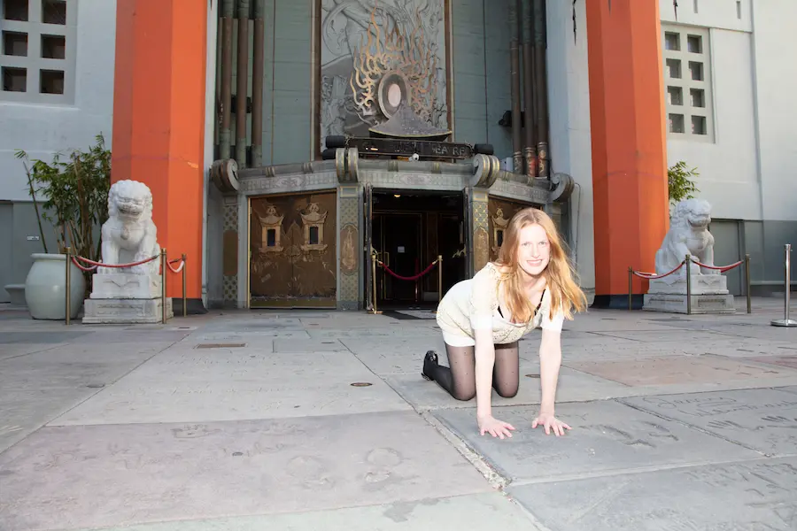
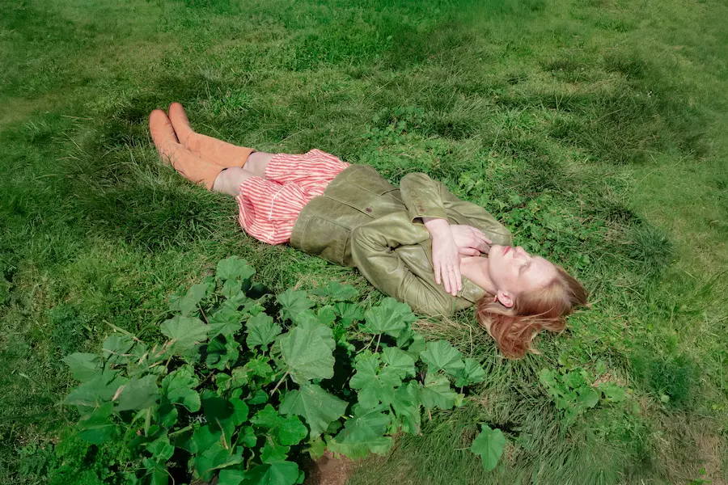
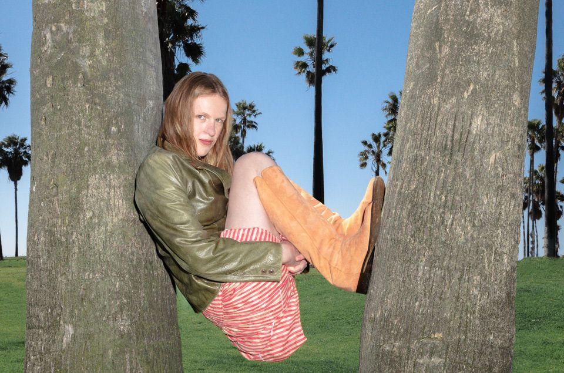
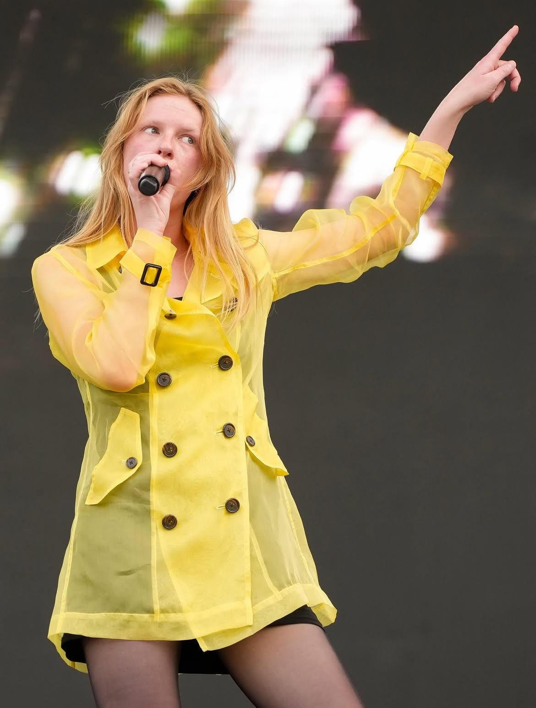

“Bowling alley” ilk bakışta tek başına bir partiye gitmekten korkan komik bir kızın şarkısı gibi duruyor. Biraz kazıyınca başka bir şey çıkıyor: yıllarca kamera arkasında yaşamış, başkalarının hikâyelerini yazmış, görünür olmaya başladığında insanların bakışının nasıl değiştiğini fark etmiş bir kadının küçük sosyal paranoyası. Audrey Hobert’ın kariyeri ile şarkının konusu neredeyse rahatsız edici derecede iyi örtüşüyor.
yoksa görünür olduğum anı mı?”
Şarkının merkezindeki bowling strike’ı küçük bir başarı anı. Hobert’ın gerçek kariyerinde ise aynı mekanizma daha büyük ölçekte çalışıyor: görünmez yazar → hit songwriter → solo pop star.
01BEFORE THE MICAudrey Hobert hiçbir zaman başrol alamadı
Audrey Hobert New York’ta doğdu, Los Angeles’ta büyüdü. NYU Tisch School of the Arts’ta dramatic writing / screenwriting okudu ve 2021’de mezun oldu. Müzik kariyerinden önce hayatının profesyonel merkezi gerçekten yazıydı: Warner Bros.’ta writer’s production assistant olarak çalıştı, ardından Nickelodeon’ın The Really Loud House dizisinde iki sezon staff writer oldu.
Ama performans isteği çok daha eski. Lisede Guys and Dolls, In the Heights, Evita ve Spring Awakening gibi müzikallerde sahneye çıktı. Sadie Sink’e yıllar sonra verdiği röportajda küçük ama kariyerinin tamamını açıklayan bir cümle kurdu: hiçbir zaman başrol alamadı.
Bugünden bakınca ironisi fazla temiz. Genç Audrey başrol bekledi, kimse vermedi. Sonra yıllarca başkalarının metinlerini yazdı. En sonunda karakteri de senaryoyu da müziği de kendi kurdu.

02THE NEPO QUESTIONUnderdog hikâyesinin Hollywood dipnotu
Fakat bu hikâyeyi klasik “hiç bağlantısı olmayan genç kadın sektöre girdi” masalına çevirmek de doğru olmaz. Audrey’nin babası Tim Hobert; Spin City, Scrubs, Community ve The Middle gibi sitcom dünyalarında çalışmış deneyimli bir televizyon yazarı ve yapımcı. Daha önemlisi, Audrey’nin staff writer olduğu The Really Loud Houseun developer/showrunner’ı da babasıydı.
Kardeşi Malcolm Todd da bugün yükselen bir müzisyen. Çocukluk arkadaşı Gracie Abrams ise Hollywood’un en güçlü yaratıcı ailelerinden birinin kızı. Bu nedenle Audrey’nin “underdog” anlatısına internette zaman zaman nepo / industry privilege tartışması eşlik etti.
Hobert bu bağlantıları saklamıyor; ayrıcalıklı başlangıç koşullarını inkâr etmek yerine bunun hayatının bir parçası olduğunu kabul eden bir tavır sergiliyor. Yazıda korunması gereken nüans tam burada: bu bir “skandal” değil, ama pop yıldızlığının etrafındaki en görünür tartışma.
03THE ROOMMATEGracie Abrams’la aynı yatağı ve sonra aynı şarkıları paylaştı
Audrey ile Gracie Abramsın ilişkisi tipik bir “industry friendship” değil. Arkadaşlıkları beşinci sınıfa kadar gidiyor. NYU yıllarında Audrey’nin küçük stüdyo dairesinde bir dönem aynı full-size yatağı paylaşarak fiilen birlikte yaşadılar; Los Angeles’a döndüklerinde yine ev arkadaşı oldular.
Audrey’nin songwriting’e başlaması büyük ölçüde bu ev hayatından çıktı. Hobert daha sonra Gracie’yi kendi müzik kariyerinin “bütün sebebi” olarak tarif edecekti. O dönemde kendisini iyi bir songwriter olarak bile görmüyordu. Yalnızca en yakın arkadaşıyla şarkı yazmanın çok eğlenceli olduğunu düşünüyordu.
Gracie de o dönemi iki “Tasmanian devil”ın crush’ları, kızgınlıkları ve küçük dramaları abartıp şarkıya çevirdiği bir yaratıcı oyun alanı gibi anlatıyor. Sonuç, pop dünyasında büyük bir writer credit ağına dönüştü.
04THE INVISIBLE HITMAKER“That’s So True”nun arkasındaki diğer isim
Audrey, Gracie Abrams’ın The Secret of Us döneminde “Risk”, “Blowing Smoke”, “I Love You, I’m Sorry”, “Let It Happen”, “I Knew It, I Know You”, “Normal Thing” ve deluxe döneminin dev hiti “That’s So True” dahil birçok şarkıda ortak yazar olarak yer aldı. Bazı kayıtlarda backing vocal da yaptı.
“That’s So True” Billboard Hot 100’de 6 numaraya kadar çıktı. Yani Hobert solo şarkıcı olarak geniş kitle tarafından tanınmadan önce zaten milyonların ezbere bildiği bir pop hitinin yaratıcı çekirdeğindeydi.
Kamera tarafında da aynı ortaklık vardı. Gracie Abrams’ın “Risk” ve “I Love You, I’m Sorry” kliplerini Audrey yönetti. Böylece onun eski mesleği ile gelecekteki pop personası arasında köprü kuruldu: screenwriter → songwriter → director → frontwoman.
05THE EXITSongwriting speed-date’lerinden kaçıp kendini yazmaya başladı
Nickelodeon dönemi bittikten sonra Hobert songwriting publishing anlaşması yaptı ve endüstrinin klasik “iki yabancıyı odaya koy, akşama şarkı çıkar” sistemine girdi. Kendi arşivinde bu writing session’larından pek hoşlanmadığını açıkça anlatıyor. Yeni tanıştığı insanlar için aynı gün şarkı üretmek ona göre değildi.
Nisan 2024’te publisher’ına artık başkaları için değil, kendi projesini yapmak istediğini söyledi. Bu karar, o güne kadar yan karakter gibi çalışan bütün yeteneklerini tek kişide birleştirdi.
06THE SOUNDRicky Gourmet pop dinlemiyordu; Audrey tam olarak bunu istedi
Kendi projesinin merkezindeki prodüktör Ricky Gourmet, gerçek adıyla Matthew Fildey. Çalışma yöntemleri de Audrey’nin kontrol ihtiyacına uygun: Ricky prodüksiyon iskeletini kuruyor, Audrey beat’i eve götürüyor, yalnız başına söz ve melodi yazıyor, sonra birlikte tamamlıyorlar.
Hobert kendisini açıkça “%100 pop” olarak tanımlarken Gourmet’ın pop dinlememesini bir avantaj olarak görüyor. Ona göre bu kombinasyon şarkıların fazla formülize olmasını engelliyor. Who’s the Clown? malzemesinin büyük bölümü yaklaşık sekiz ay içinde yazıldı.
07THE FIRST SINGLEÖnce “Sue me” geldi
Audrey Hobert’ın ilk solo single’ı “Sue me” Mayıs 2025’te çıktı. İlk anda dev bir chart patlaması olmadı; ama şarkı daha sonra 2026’da gerçek bir sleeper hit’e dönüşecekti.
Bir ay sonra, 20 Haziran 2025’te ikinci single geldi: “Bowling alley”. RCA Records üzerinden yayımlanan iki parçalık dijital single’da yanında “Sue me” de bulunuyordu. Parça Hobert’ın yalnızca sesi değil, bütün dünya kurma biçimi için daha iyi bir kimlik kartı oldu.
08THE ORIGIN“Bowling alley” aslında çıplak komşu hakkında başlayacaktı
Şarkının doğuşu Audrey Hobert’ın neden Audrey Hobert olduğunu açıklayan türden. Yazmaya oturduğunda bowling hakkında hiçbir planı yoktu. Kendi deyimiyle bir “naked neighbor” şarkısı yazmak istiyordu: evinde çıplak dolaşan komşunun kendisi olduğu üzerine bir fikir.
THE FIRST IDEA“Ben çıplak komşuyum ve…”
Fikir çalışmadı. Capo’nun yerini değiştirdi, başka akorlar çalmaya başladı ve yeni bir ilk cümle çıktı. Hobert nereye gittiğini bilmeden yazmaya devam etti. Sonunda ortaya kariyerinde en gurur duyduğu şarkılardan biri çıktı.
Ve evet: “naked neighbor” tarafı tamamen kurgu değildi. Audrey kendi arşivinde bunun neden aklına geldiğini tek cümleyle açıklıyor: “because I am.”
09THE FEELINGBowling partisi olmadı; paranoya tamamen gerçekti
Şarkıdaki bowling partisi birebir yaşanmış bir olay değil. Hobert bunu özellikle söylüyor. Ama duygunun kaynağı gerçek: tek başına partilere gitmek, davetli olduğu halde “beni gerçekten istiyorlar mı?”, “tek başıma gidersem aptal mı görünürüm?” diye düşünmek.
İkinci katman daha keskin. Hobert yıllardır tanıdığı insanların ancak kamusal veya sanatsal olarak “ilginç” bir şey yaptığında kendisine başka türlü davranmaya başladığını söylüyor. Bu yüzden şarkının bowling strike’ı yalnız bir spor anı değil. Bir anda herkesin başını çevirip bakmasına neden olan küçük bir statü değişimi.
Ona bakan insanların ilgisi.
Şarkının kariyer hikâyesiyle güçlü biçimde örtüşmesinin nedeni bu.
Hobert “Eğer Audrey Hobert bir şarkı olsaydı muhtemelen bu olurdu” diyecek kadar parçayı kişisel görüyor.


10NO DEEP SYMBOLISMBaşlık “striking” kelimesinden çıktı
“Bowling”in karanlık bir çocukluk metaforu olduğunu düşünmeye gerek yok. Audrey 2025 sonunda başlığın kökenini oldukça komik biçimde açıkladı: yazarken “striking” kelimesini kullanınca aklına “strike”, oradan bowling geldi.
Yani bowling salonu büyük ölçüde çağrışım kazası. Fakat Audrey’nin çocukluğundan beri karanlık, LED ışıklı, yüksek sesle pop klipleri oynatan bowling salonlarını sevdiği ve onları biraz “sexy” bulduğu da kendi notlarında geçiyor. Tesadüf mekân, çok kişisel bir estetik preference’a dönüştü.
11THE PLOT2 dakika 35 saniyelik sitcom bölümü
Şarkının olay örgüsü neredeyse klasik üç perdeli komedi. Audrey kötü geçen bir günün ardından eve geliyor. Rahatlıyor, hazırlanmayı bırakıyor, pencereden dışarı bakınca unuttuğu bowling partisini hatırlıyor. İlk refleksi gitmemek: kimsenin onun orada olmasını gerçekten umursamadığını düşünüyor.
Sonra gidiyor. Bowling salonunda ilk anda yine görünmez. Bir strike yapıyor ve insanların ilgisi değişiyor. Aynı kişi, aynı kıyafet, aynı karakter; yalnızca artık küçük bir “başarı” var.
Şarkının finali de önemli. Audrey sosyal onayı aldıktan sonra geceyi merkezinde kalıp tüketmiyor. Eve dönmeyi seçiyor. Zafer “partinin yıldızı olmak” değil; gidip görünmek ve sonra kendi isteğiyle çıkmak.
12THE RECORDKüçük ekip, çok belirgin bir kimlik
“Bowling alley”nin söz ve bestesi yalnızca Audrey Hoberta ait. Prodüktör Ricky Gourmet; bass, gitar, percussion, synthesizer ve programming kredilerini de taşıyor.
Söz ve beste.
Matthew Fildey; çoklu enstrüman ve programming.
Vocal recording engineering.
Mix ve mastering; Liam Weiland assistant engineering.
Parça daha sonra 12 şarkılık, yaklaşık 35 dakikalık Who’s the Clown? albümünün 5. sırasına yerleşti. Farklı analiz servisleri tempo ve tonalite konusunda tamamen aynı sonucu vermiyor; Chordify ve Hooktheory çevresindeki analizler yaklaşık 94–95 BPM ve F / B♭ major çevresini işaret ediyor. Bu nedenle internette dolaşan 120–144 BPM gibi tekil rakamları kesin metadata olarak almak doğru değil.
13THE VIDEOEski mesleği geri dönüyor: kendi kısa filmini yönetiyor
“Bowling alley” klibini Audrey Hobert bizzat yönetti ve edit etti. Production company bigkid, görüntü yönetmeni Adrian Nieto, production designer Wesley Goodrich. Clown rolünde Guilford Adams var; dansçılar, arkadaşlar ve aile üyeleri de kadroya karışıyor. Çekimlerin bowling bölümü Los Angeles’taki All Star Lanes, Eagle Rock Boulevardda yapıldı.
Audrey video fikrinin daha şarkıyı yazarken oluştuğunu söylüyor. Parçayı şarkıdan çok “film, pilot episode ya da short film” gibi hissetmiş. Screenwriting geçmişi burada doğrudan görünür hale geliyor: klip yalnız performans görüntülerinden değil, olay örgüsünden çalışıyor.
Aile yine kadrajda. Kız kardeşi Ella Hobert ve kuzenleri video dünyasının parçası. Audrey, Ella ile otoparkta yürüyüp dans ettikleri sahneyi düşündüğünde hâlâ duygulandığını anlatıyor.

14THE CLOWN FAMILYAlbüm kapağının ilk clown’u öz kardeşiydi
Who’s the Clown? estetiği bir creative agency sunumundan çıkmadı. Audrey ilk kapak fikrini Mayıs 2024’te Sex and the Cityyi bitirdikten sonraki sabah buldu. O sırada bütün projeyi kendi parasıyla yapacağını düşünüyordu.
İlk denemede clown rolüne kardeşi Malcolm Todd geçti. Makyajını Audrey yaptı. Fotoğrafı kız kardeşi Ella çekti. Diğer kardeş Charlie dışarıda kalmasın diye onun bebek fotoğrafını kadraja bantladılar.
Son kapakta profesyonel prosthetic clown kullanıldı; ama Audrey’nin amacı değişmedi: kapağın biraz rahatsız etmesini, insanların dönüp bakmasını istiyordu. İnternette de tam olarak bu oldu. Bazıları estetiğe bayıldı, bazıları clown’u düpedüz ürkütücü buldu.
2026’da başka bir video için 13 kuzenini uçakla çekime getirdiğini anlatması da aileyi prodüksiyon bütçesinin parçasına çevirme alışkanlığının devam ettiğini gösteriyor.
15THE AFTERPARTYGrammy gecesi, mushroom microdose ve görünmezlik
Audrey’nin albümündeki “Chateau” daha magazinel bir geceden çıktı. 2024 Grammy döneminde bir industry afterparty’ye gidiyor ve kendi anlatımına göre mushroom microdose alıyor. Hemen ardından bunun kendisi için alışılmış bir şey olmadığını, normalde oldukça straight-edge olduğunu özellikle belirtiyor.
Asıl mesele uyuşturucu değil; partideki sınıf sistemi. Ünlülerle dolu ortamda insanların sürekli omzunun üzerinden daha önemli biri geliyor mu diye baktığını, kendisi “artist” ya da “actress” olmadığı için neredeyse insan yerine konmadığını düşündüğünü anlatıyor.
Sonradan kendisi artist olunca bile bu hissin tamamen kaybolmadığını söylüyor. Ve daha iyi punchline: Audrey “Chateau”yu albüme koymak istemiyordu. Annesi koydurdu.
16THE CRUSH FILEBir yaz, bir adam, üç şarkı ve tuvalette bulunan metafor
Audrey özel hayatında isimleri tabloid malzemesine dönüştürmüyor; fakat duygusal enkazı şarkılara çevirmekten çekinmiyor. “Thirst Trap”, “Drive” ve “Shooting star”ın aynı kişi hakkında bir üçleme olduğunu kendisi söylüyor.
2024 yazında bu kişiye crush olmuş; günlerini çatıda güneşlenerek, gündüz marijuana içerek ve onu düşünerek geçirmiş. Sonunda adamın kendisinden hoşlanmadığını anlamış.
“Shooting star”ın merkezindeki metaforlardan birini ise ilham perisi eşliğinde değil, tuvalette otururken bulmuş. Aklına cümle gelir gelmez olabildiğince hızlı biçimde defterine koştuğunu anlatıyor.
17FIRST PASSPORT ENERGY26 yaşına kadar ABD dışına hiç çıkmamıştı
Hollywood çevresinde büyümüş, NYU’ya gitmiş, Gracie Abrams’la global hitler yazmış birinin sürekli dünyayı dolaştığını varsaymak kolay. Değil.
Audrey 2025 yazında Londra’ya konser vermeye gittiğinde bunun hayatında ABD dışına ilk seyahati olduğunu söylüyor. O sırada 26 yaşında.
Bu ayrıntı karakteri şaşırtıcı biçimde yeniden çerçeveliyor: sektörün merkezine yakın büyümüş ama “pop star dünyası”na fiziksel anlamda gerçekten çok geç açılmış.
18THE PERSONA“Awkward girl” demeyin; weird olabilir
Hobert’ın yükselişiyle birlikte medyada kolay bir etiket oluştu: sosyal olarak beceriksiz, awkward, quirky kız. Audrey bu tanımı tam olarak satın almıyor.
2026’da New York Times’a “awkward” kelimesinin kendisiyle pek uyuşmadığını; “weird” kelimesini daha kabul edilebilir bulduğunu söylüyor. Kendini sosyal olarak aslında oldukça farkında biri olarak görüyor.
Bu ayrım “Bowling alley”yi de değiştiriyor. Şarkı sosyal kodları okuyamayan birinin hikâyesi değil. Tam tersine, odayı fazla iyi okuyan ve bu yüzden kendi varlığını fazla analiz eden birinin hikâyesi.
Sosyal medya konusunda da mesafeli. Telefonda sürekli scroll etmenin zihnine iyi gelmediğini, mümkün olduğunca dünyada ve kendi kafasının içinde kalmak istediğini anlatıyor. Persona inşa ediyor ama persona tarafından yutulmak istemiyor.
19THE BODY OF POPŞimdi mesele vokal kordları
Masa başında sitcom yazarken sesini nasıl koruyacağını düşünmesine gerek yoktu. Pop yıldızlığı geldikten sonra beden işi başladı.
2026’da Mel Ottenberg’e sürekli Nicorette sakızı çiğnediğini ve onu bir “lifeline” gibi gördüğünü söylüyor. Yeni KBB doktoru sesini çok narin bulmuş; bazı şarkıcıların sigara içip parti yapabildiğini ama Audrey’nin onlardan olmadığını, dikkat etmesi gerektiğini söylemiş.
Audrey kendi sesini “paper-thin voice” diye tarif ediyor. Birkaç yıl önce başka insanların diyaloglarını yazan biri, şimdi gününü kendi ses tellerinin sınırlarına göre planlıyor.
20THE LIVE LEAPİlk konserlerden Lollapalooza’ya bir yıl
“Bowling alley” yayımlandığında Hobert sahnede neredeyse sıfır kilometreydi. Şarkının yayımlandığı haftadan hemen önce New York’taki The Slipper Roomda verdiği ilk iki konserin ikisi de sold out oldu. Los Angeles’taki ilk konseri de birkaç gün sonra yine kapalı gişe geçti.
Bir yıl içinde ölçek tamamen değişti. Governors Ball ve Lollapalooza’da büyük kalabalıklara çıktı, iki Kuzey Amerika turnesini sattı ve Ağustos 2026’da NPR Tiny Desk yaptı. Tiny Desk ekibi özellikle fiziksel komedi ve performans dürtüsünde Steve Martin etkisine dikkat çekti.
Ardından daha büyük salonlara geçen The Staircase to Stardom Tour geldi: Brooklyn Paramount’da üç gece, Nashville Ryman Auditorium ve Fox Theater Oakland gibi mekânlar. “Bowling alley” setlist’in ilk yarısında düzenli yerini korudu.

21THE SCALE2026’da artık “Gracie’nin songwriter arkadaşı” değil
“Sue me” ilk çıkışından yaklaşık 17 ay sonra 2026’da gerçek bir sleeper hit oldu. Eylül 2026’da Billboard Hot 100’de yeni zirvesi 57 numaraya çıktı; UK Singles Chart’ta aynı ay 21 numarayı gördü.
19–20 Eylül 2026 snapshot’larında “Bowling alley” yaklaşık 29,6 milyon Spotify stream ve günlük yaklaşık 85 bin dinlenme ölçeğinde; Audrey’nin toplam solo Spotify kataloğu 340 milyonun üzerinde. Chartmetric aynı dönemde yaklaşık 8,6 milyon aylık Spotify dinleyicisi, 386 bin Spotify takipçisi, 571 bin Instagram takipçisi, 616 bin TikTok takipçisi ve 82 bin YouTube abonesi gösteriyor.
Resmî “Bowling alley” videosu da yaklaşık 1,2 milyon YouTube görüntülenmesi ölçeğinde. Bunlar canlı sayaçlar değil; Eylül 2026 snapshot’ları.
İşin aile tarafı da ilginç: kardeşi Malcolm Todd aynı dönemde kendi hitleriyle yükseliyordu. 2026 yazında iki kardeşin paralel chart çıkışı İngiliz basınında ayrı bir hikâyeye dönüştü.
22THE LAST WORDKendi sitcom’unun başrolü
Audrey Hobert’ın hikâyesini klasik pop yıldızı biyografisi gibi yazınca en iyi kısmını kaybediyorsunuz.
Bu hikâyede çocuk yaşta şöhret yok. Reality-show keşfi yok. Viral TikTok’tan ertesi gün plak şirketi anlaşması yok. Onun yerine başrol alamayan lise müzikalleri var. Babasının sitcom dünyası var. Warner ve Nickelodeon writers’ room’ları var. Gracie Abrams’la paylaşılan küçük bir yatak var. Sonra milyonların dinlediği ama Audrey’nin yüzünü bilmediği hitler geliyor.
Ardından Grammy partisinde kimsenin kendisine bakmadığını düşünen kadın kendi albümünü yapıyor. Çıplak komşu hakkında yazmaya oturuyor, bowling salonuna çıkıyor. Kardeşine clown makyajı yapıyor. Kuzenlerini videolara dolduruyor. İlk kez ülke dışına 26 yaşında çıkıyor. Bir yıl sonra Lollapalooza’da binlerce insan sözlerini bağırıyor.
Ve “Bowling alley” bütün bu kariyerin minyatürü gibi çalışıyor: Audrey odaya giriyor. Önce kimse bakmıyor. Sonra bir strike geliyor. Herkes dönüyor.
Başrolü kimse vermedi. Audrey Hobert sonunda kendi bölümünü yazdı.
Yazan ISC Editorial · Yayın: 21 Eylül 2026
Kaynakça & Further Reading 24 kaynak · tıklayarak aç / kapat
- The New York Times / Popcast — Audrey Hobert interview, 18 Sep 2026Televizyon yazarlığı, Gracie Abrams bağlantısı, “awkward” etiketi, kariyer geçişi ve “Sue me”in 2026 yükselişi.
- Interview Magazine — Audrey Hobert & Sadie SinkLise müzikalleri, hiç başrol alamaması, ilk yurtdışı seyahati ve erken kariyer kimliği.
- Vulture — Audrey Hobert profileIndustry privilege / nepo tartışması, solo persona ve kariyer bağlamı.
- W Magazine — Who’s the Clown? interviewGracie ile ev arkadaşlığı, aynı yatağı paylaşmaları, Ricky Gourmet çalışma yöntemi ve albümün sekiz aylık yazım dönemi.
- AllMusic — Gracie Abrams, The Secret of Us creditsAudrey Hobert’ın songwriting ve backing-vocal kredileri.
- Audrey Hobert Archive — artist notes“Bowling alley”nin naked-neighbor başlangıcı, gerçek/kurgu parti ayrımı, Ricky Gourmet süreci, Chateau, crush üçlemesi ve aile içi clown prodüksiyonunun birinci-el anlatıları.
- Coup De Main — Audrey Hobert interview“Bowling alley”de insanların başarı geldikten sonra farklı davranması teması.
- FEMMUSIC — Bowling alley20 Haziran 2025 çıkışı, şarkının kişisel anlamı ve ilk sold-out konserler.
- The New Yorker — Audrey Hobert profile“Striking → strike → bowling” başlık hikâyesi ve persona tartışması.
- MusicBrainz — Bowling alley release metadataYayın, süre ve kayıt metadata’sı.
- Chordify / harmonic analysisTempo ve tonalite için yardımcı analiz; servisler arası uyuşmazlık nedeniyle kesin metadata yerine yaklaşık teknik bağlam olarak kullanıldı.
- Audrey Hobert — Bowling alley (Official Video)Resmî video, video kredileri ve güncel görüntülenme bağlamı.
- People — Audrey Hobert interviewWho’s the Clown? kapak fikri ve clown estetiğinin bilinçli rahatsız ediciliği.
- Interview Magazine — Audrey Hobert & Mel Ottenberg13 kuzenli video çekimi, Nicorette, KBB ve “paper-thin voice” anlatısı.
- Interview Magazine — Malcolm Todd / Audrey HobertKardeşlik, aile içi yaratıcı çevre ve Malcolm Todd bağlantısı.
- Teen Vogue — Who’s the Clown? interviewUnderdog kimliği, görünürlük, özel/kamusal benlik ve sosyal medya yaklaşımı.
- Pitchfork — Tiny Desk, 2026Tiny Desk, canlı performans ölçeği ve hızlı yükseliş.
- Live Nation — Audrey Hobert eventsThe Staircase to Stardom Tour ve büyük salonlara geçiş.
- Official Charts — Sue me2026 UK Singles Chart performansı.
- The Guardian — Audrey Hobert & Malcolm Todd2026’da kardeşlerin paralel chart yükselişi.
- Kworb — Audrey Hobert Spotify snapshot“Bowling alley” ve solo katalog stream snapshot’ları, Eylül 2026.
- Chartmetric — Audrey Hobert snapshotSpotify, Instagram, TikTok ve YouTube ölçeği; Eylül 2026 canlı sayaç snapshot’ı.
- Interview Magazine — Gracie Abrams profileAudrey–Gracie yaratıcı arkadaşlığının “Tasmanian devils” dönemi ve ortak yazarlık bağlamı.
- IMDb — The Really Loud House creditsAudrey Hobert’ın staff-writing dönemi ve Tim Hobert bağlamı için yardımcı kredi kaydı.
Editoryal not: Audrey Hobert hakkında güvenilir kaynaklarda kariyerini tanımlayan büyük bir “skandal” bulunmuyor. Yazıda yer verilen nepo / industry privilege tartışması bir kamu algısı ve medya çerçevesi olarak aktarılmıştır; ayrıcalık, yetenek veya başarı hakkında editoryal hüküm kurulmamıştır. Mushroom, marijuana, “naked neighbor”, crush ve benzeri kişisel ayrıntılar yalnızca Hobert’ın kendi kamuya açık anlatılarında paylaştığı ölçüde kullanılmıştır. Stream, sosyal medya ve chart rakamları Eylül 2026 snapshot’larıdır; canlı sayaç olarak değerlendirilmemelidir.